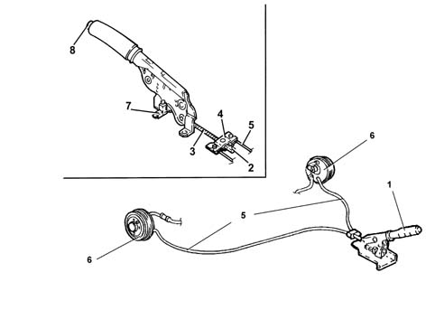

3380A handbrake control and linkage
- Path
- Descriptions > 33 BRAKING SYSTEM > 3380 HANDBRAKE > 3380A handbrake control and linkage
- Kind
- system description
- Applies to
- all engines; all production periods
- Interactive page
- https://sloeber94.github.io/elrnDB-fPnd/en/#/2750941
Applies to: all engines; all production periods
When the handbrake lever is raised, a flexible cable connected to a rocker is operated. The rocker is responsible for balancing and distributing traction force beteen the two flexible links anchored to it. Its movement controls the operation of levers on the rear brake calipers in order to engage the handbrake.
The flexible cable connected to the lever comes with a threaded end so that the travel of the control lever between the two front seats can be adjusted from inside the car.
When the handbrake lever is pulled up, the indicator switch turns on a panel warning light via the Body Computer to indicate handbrake application.
The handbrake is kept engaged by a toothed sector that prevents the handle being lowered.
When the release button is pressed, the lever is released and the tension of the links on the levers may be slackened. The levers then release the handbrake under the action of the return spring.
VIEW OF HANDBRAKE ASSEMBLY

1 Handbrake lever 2 Adjustment nut 3 Threaded flexible link 4 Anchor 5. Flexible links 6. Brake drums 7. Handbrake applied indicator switch 8. Release button